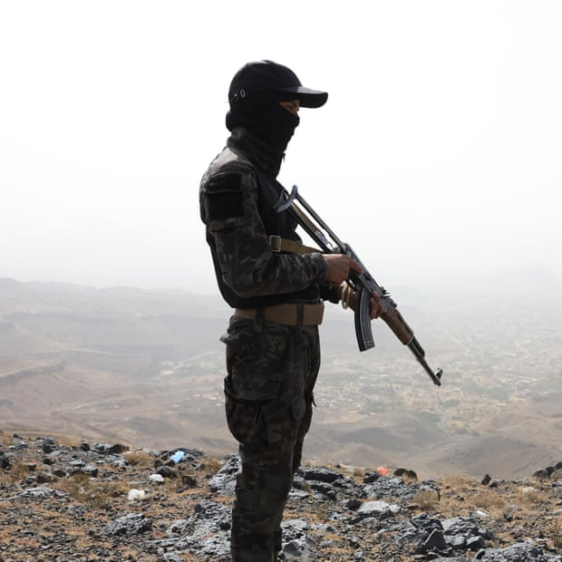
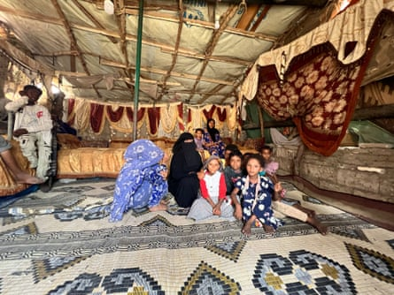
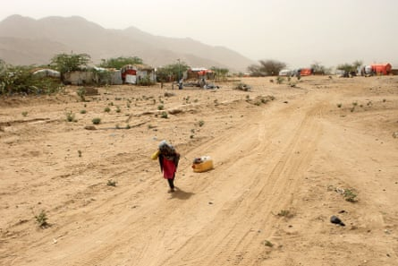
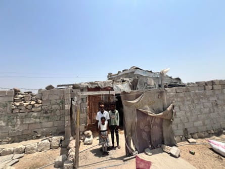

T he pain of going to bed hungry is becoming familiar for Jamila Rabea. It’s hard to sleep. The meagre rations of bread, tomato paste and tea she spends much of her day trying to gather, she gives to her children. Five of them live with her in a shelter built from tarpaulin, cloth and scraps of wood.
Like many of the refugee families living here in a makeshift camp to the east of the Yemen port city of Al-Mukalla, she has had to leave home because of the bombs and fighting.
“Life is extremely difficult. At times, it pushes us to the brink of despair,” she says.
Al-Mukalla is under the control of the Saudi-backed Yemeni government. Though US drone strikes have previously hit the area, the city is currently safe from the Saudi, Israeli and US bombing raids on Houthi forces in the country’s north and east.
Al-Mukalla has long been a place of refuge, including for people fleeing conflict in Somalia, just across the Gulf of Aden, and now for some of Yemen’s own 4.8 million internally displaced people.
After more than a decade of civil war, with the involvement of well-armed neighbours and their allies, poverty and hunger have worsened sharply in Yemen just as aid cuts have started to bite and humanitarian assistance is drying up.
Many families like Rabea’s are now surviving on mostly bread and water, sometimes rice and onions. Some people the Guardian talked to in this settlement camp, one of several around the city, were frank in admitting they had considered taking their own lives because they could not feed their children.
“We endure, out of patience and for our children’s sake – because without us, they’d have no one to care for them. Some nights, I sleep hungry just so my children can eat. Things are only getting worse,” says Rabea, as she sits surrounded by her children and nieces.
Like Rabea and her children, millions in Yemen are suffering malnutrition and food deprivation.Photograph: Saeed Al-Batati
International aid agencies operating in Yemen say that nearly half the population, more than 17 million people, are estimated to be suffering acute malnutrition . Severe levels of food deprivation increased from 21% in March 2024 to 33% in March 2025, according to the World Food Programme (WFP).
In a joint statement last month, the UN’s Food and Agriculture Organization, WFP and Unicef said about 4.95 million people in the south were experiencing “ crisis-level ” food insecurity or worse.
The WFP says demand in Yemen has outpaced the available money, and that humanitarian efforts are badly underfunded, “with only a quarter of what WFP needs to operate in 2025 received to date”.
“As a result, WFP has been forced to reduce ration sizes, prioritising the most vulnerable in the most food-insecure areas,” says a WFP spokesperson. “Without urgent new funding, millions risk losing assistance in Yemen in the coming months.”
Rabea and her daughter collect firewood to sell, while her husband and son scavenge for plastic bottles and scrap metal. Together, they earn about 5,000 Yemeni riyals a day – less than $2 at current exchange rates.
“With that, we manage to buy a kilo of flour, a bit of rice, a can of tomato paste and some oil – just enough to cook a basic meal,” she says. “If we’re lucky, sometimes we might afford a small, cheap fish.
“In the past, the World Food Programme provided us with monthly food baskets. That used to feed us for a whole month, and we spent what little we earned on buying meat.
An internally displaced child transports water at a camp in Yemen’s Hajjah governorate last July. Getting clean water is a daily struggle for many.Photograph: Essa Ahmed/AFP/Getty Images
“Now that support has stopped, and we can no longer afford proper meals. As adults, we can bear the hunger, but our children can’t,” she says. “We can’t even afford beans any more – a single can costs 1,000 riyals. So for dinner, it’s just bread and rice cooked with tomato paste and onions.”
Aid agencies say the worsening food crisis in Yemen’s south is largely driven by war, escalating again after a 2022 ceasefire, with ongoing strikes contributing to one of the world’s worst humanitarian crises, along with an economic meltdown and devaluation of the riyal and severe weather events.
The Iran-aligned Houthi movement continues to control the country’s most densely populated areas in the north and west, including the capital, Sana’a. Meanwhile, the internationally recognised Presidential Leadership Council – backed by the Gulf states and western governments – governs the southern and eastern provinces from its base in Aden.
S aleh Yahia, a 62-year-old father of seven, lives in the same settlement as the Rabea family. He says the situation has become unbearable. According to Yahia, assistance from the WFP ceased two years ago. Since then, families have been receiving modest cash payments, which are intended to be monthly but often arrive only once every three months. Three of his sons work as day labourers, while Yahia collects empty plastic and metal containers to sell to scrap dealers.
Saleh Yahia, 62, with some of his children inside their makeshift shelter in Al-Mukalla, Yemen.Photograph: Saeed Al-Batati
“People are hungry. We are barely getting by. My children are suffering from malnutrition because we can’t afford to buy meat, chicken or fish,” he says.
According to Unicef, half of all children under five in Yemen are malnourished.
Yasen al-Khulaidi is a schoolteacher in the southern city of Taiz, also controlled by the presidential council. He says his salary of 80,000 riyals a month, when it arrives, barely covers a week’s worth of basic staples. “We survive on bread and tea most days. Sometimes I skip meals or stop eating halfway through just so my children have enough,” he says.
“There are moments when I’ve wished for death out of sheer despair. Some of my colleagues have divorced their wives or abandoned their homes because they can’t provide for their families.”
The father of four also supports his elderly parents. After not receiving his salary in two months, he asked his wife to move in with her family while he stays in a makeshift room that was initially a shop to avoid paying rent.
He also has gallbladder, kidney and colon problems, which he believes are the result of surviving on nothing but bread and water for so long.
“We are living in misery – struggling every day to get food, clean water, cooking gas, school supplies and healthcare,” he says. “Only our faith in God keeps us going.”